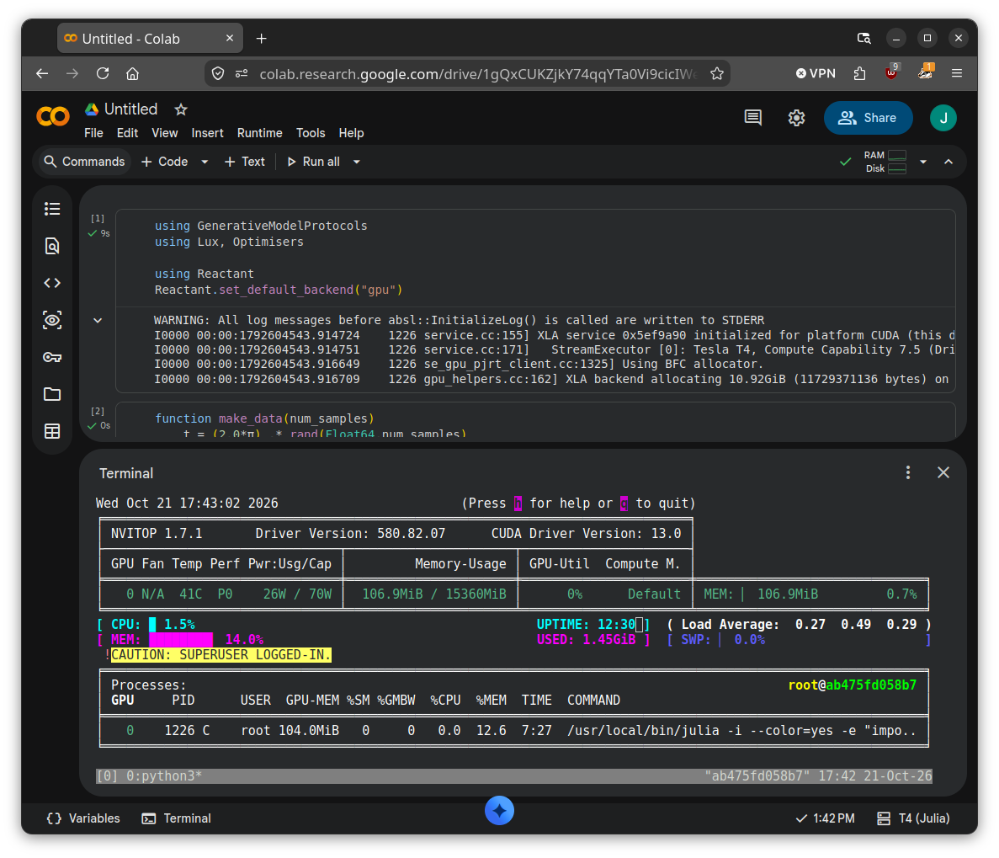
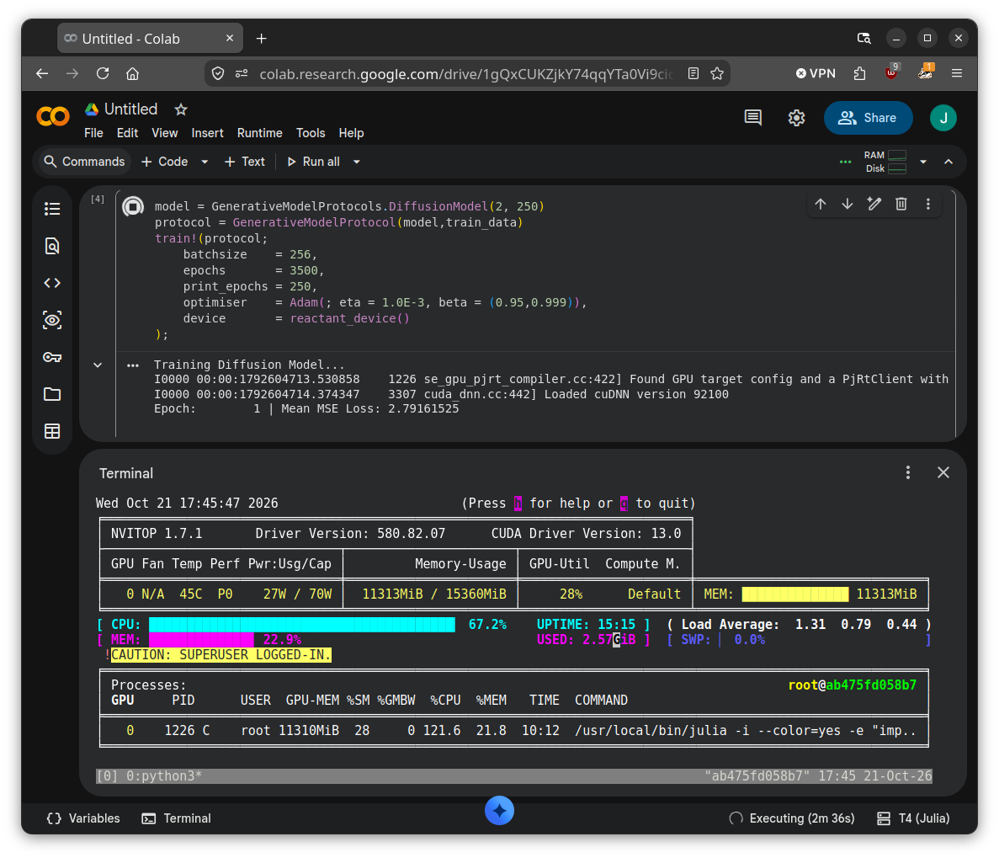
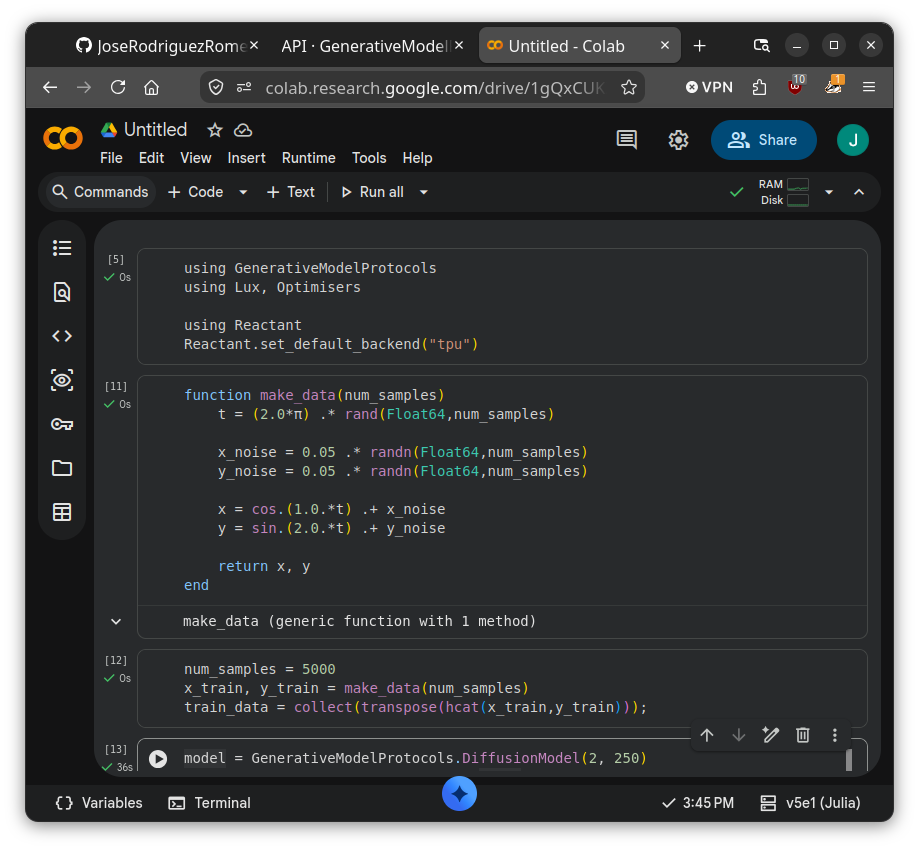
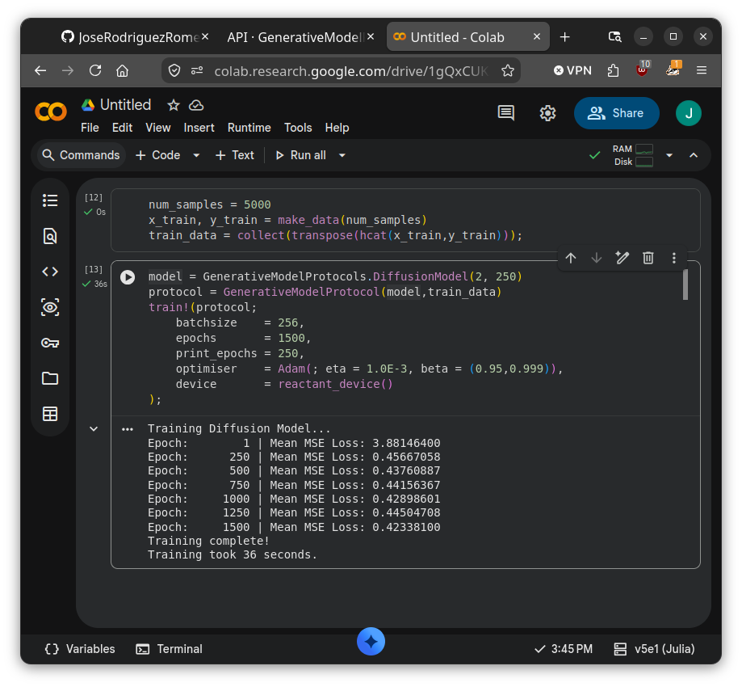

Using Reactant.jl
A key feature of Lux.jl is its Reactant.jl-first mentality, designed to scale neural networks seamlessly across high-performance hardware. This Julia module brings the core compiler architecture of the JAX ecosystem natively to Julia by tracing functions and compiling them directly into highly optimized MLIR representations. Powered by Google's XLA engine, it functions similarly to jax.jit to optimize and execute tensor programs across CPUs, GPUs, and TPUs. Because it shares this underlying compiler stack, Reactant.jl provides zero-overhead interoperability with Python's JAX while fully preserving native Julia advantages like in-place memory mutations and multiple dispatch.
Reactant.jl delivers native, flexible support across CPU, GPU (supporting both NVIDIA CUDA and AMD ROCm), and Cloud TPU backends. By managing memory through its own runtime, it automatically handles how data is split up and processed across these different chips without requiring you to rewrite any code for specific hardware. This allows developers to seamlessly scale identical model code from a local laptop up to massive cloud accelerator clusters.
This module supports using Reactant.jl as the compute device across all available generative models, spanning CPU, GPU, and TPU backends. While both CPU and TPU configurations are fully supported, only NVIDIA setups have been tested on the GPU side so far. Furthermore, all GPU capabilities within this module are supported exclusively through Reactant.jl.
CPU Backend
If no GPU or TPU acceleration is available, Reactant.jl still offers a CPU implementation that often outperforms native Julia training of all generative models available within this module using cpu_device().
To ensure that the CPU backed is being used users only need to input
using Reactant
Reactant.set_default_backend("cpu")and, for example, a protocol
julia> protocol
GenerativeModelProtocol:
training_data = 2×5000 Matrix{AbstractFloat}
mean_training_data = Tuple{Float64, Float64}
var_training_data = Tuple{Float64, Float64}
model = GenerativeModelProtocols.DiffusionModelcan be trained with the Reactant.jl backend with
train!(protocol;
batchsize = 256,
epochs = 1500,
print_epochs = 250,
optimiser = Adam(; eta = 1.0E-3, beta = (0.95,0.999)),
device = reactant_device()
)GPU Backend
To use the GPU backend, first set Reactant.jl's default backend to "gpu".

and then simply set the device to reactant_device()

TPU Backend
To use the TPU backend, first set Reactant.jl's default backend to "tpu".

and then simply set the device to reactant_device()
